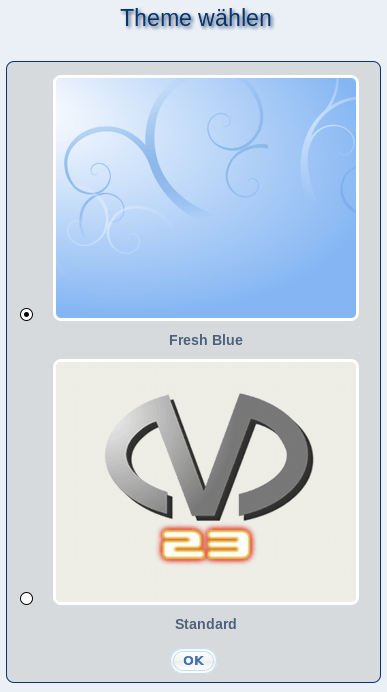

Nächste Seite:
m23 Fern-Administrations-Service
Aufwärts:
Server
Vorherige Seite:
Adreßlisten
Inhalt
Theme wählen
Hier können Sie das Aussehen von m23 anpassen. Wählen Sie unter den aufgeführten Themes das aus, welches Ihnen am besten gefällt, und klicken Sie auf
''OK''
. Diese Einstellung gilt nur für Ihr eigenes Benutzerkonto.

dodger 2014-08-06